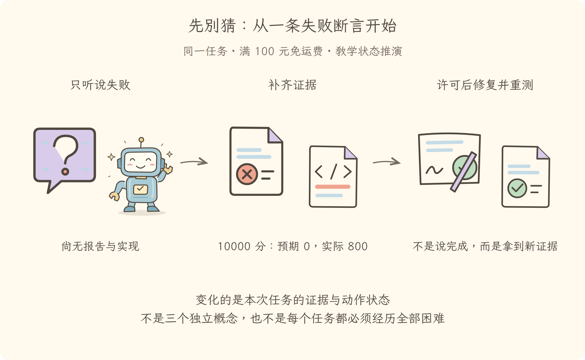

写给 Java 后端工程师 · 17 讲＋3 篇补课
一条失败断言，
串起智能体的工作原理。
先查报告，再读代码；拿到授权后修复，最后重跑测试。同一任务逐步遇到拒绝、中断、长材料和分工，每个机制都有它要解决的新困难。
120 份阅读文档 · 23 张成品插图 · 本地手写字体

图表现同一任务的变化。
读到证据、获准动作、验证成功，是三件不同的事。
从第一讲一路读到第十七讲
01–11：任务怎样推进；12–15：遇到配置、资源与协作故障怎样定位；16–17：如何验收并迁移到其他框架。这是教学顺序，不代表每次排查都会经过所有故障。
语法卡住再查补课 A/B，工程路径不清再查 C。不需要跳着追旧编号；旧分享链接会打开对应的新章节。
主线 01—17
每一讲接住上一讲留下的问题
正文优先中文，保留的专业英语附中文；先讲直觉与比喻，再核对固定源码。
01
连续主线
先别猜：从一条失败断言开始
只有失败通知，没有报告和源码
02
连续主线
谁让助手读完报告后再读代码
已有任务目标，但一次回答还不能完成排查
03
连续主线
报告明明在磁盘，模型为什么仍不知道
报告在工作区中，却不在模型请求里
04
连续主线
想改代码，不等于已经获准修改
模型已经提出读代码或修改的请求
05
连续主线
这次读到的证据，下次从哪里取
报告和代码分次获得，不能依靠模型凭空记忆
06
连续主线
有工具却总漏步骤，怎样带上排查手册
能取得材料，但可能忘记业务约定与边界测试
07
连续主线
读错工作区或执行被拒绝怎么办
模型知道要改什么，但执行世界和权限还未确认
08
连续主线
关掉后再打开，能从哪一步继续
已经记录报告和修改意图，但进程中断
09
连续主线
材料多到一次看不完，怎样留下关键证据
日志不断增长，失败与授权可能淹没在历史里
10
连续主线
一个查契约，一个查实现，结果怎样合回来
排查扩展到多个模块，串行阅读耗时增加
11
连续主线
哪些步骤可以固定，哪些要继续判断
多份子任务结果到齐，但处理顺序不能靠随口约定
12
连续主线
缺少执行器，为什么配置写了还不能开工
明确了所需能力，却发现当前配置缺项
13
连续主线
切换执行环境后，旧定时器为何还在跑
补上能力后要替换报告监视插件
14
连续主线
同名文件服务，怎样接到这次任务的工作区
旧资源已清理，但新工具不能误连旧服务
15
连续主线
记录员、审批者和执行者，谁必须等待谁
正确能力已装好，多方仍需有序协作
16
连续主线
助手说修好了，怎样证明不是只说说
补丁已写入，但还没有新测试证据
17
连续主线
拆掉框架名字，你还能解释这次排查吗
具备从报告到验证的完整证据链
独立补课 · 随用随查
A
按需补课
类型、分支与异步：读源码的最小语法
遇到语法或工程配置障碍时查阅，读完返回当前主线章节。
B
按需补课
类型关系：插件协作中的防错工装
遇到语法或工程配置障碍时查阅，读完返回当前主线章节。
C
按需补课
工程地图：成员、检查与构建
遇到语法或工程配置障碍时查阅，读完返回当前主线章节。